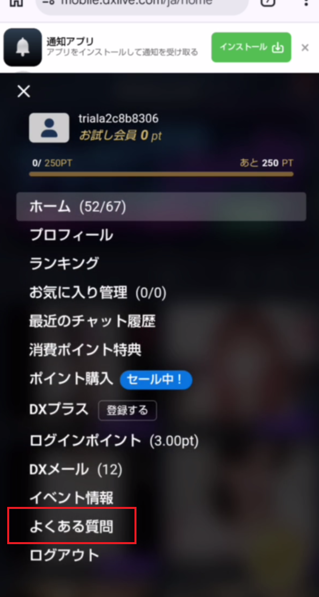
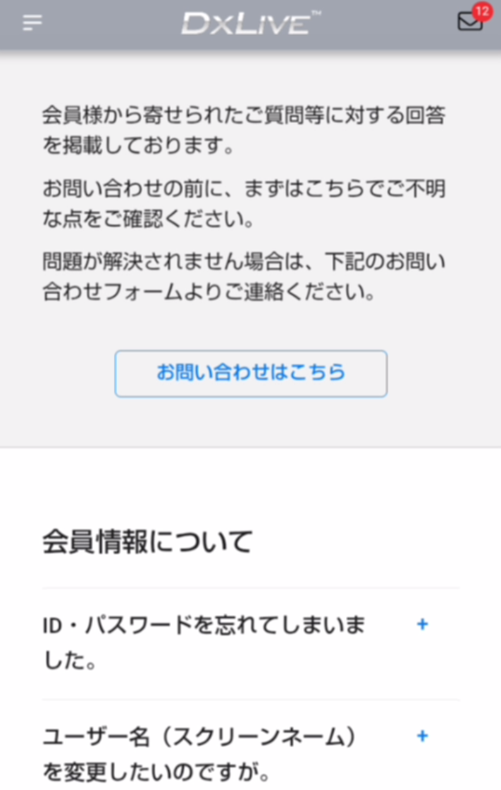
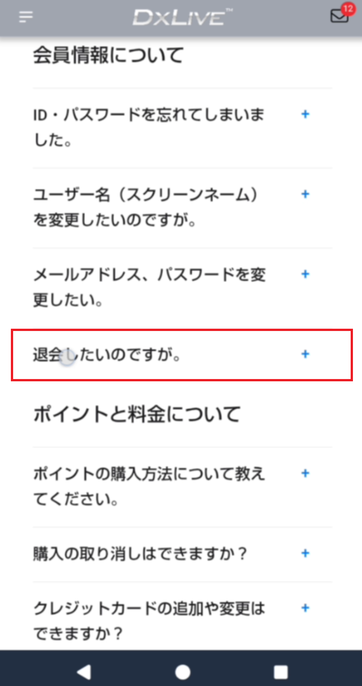
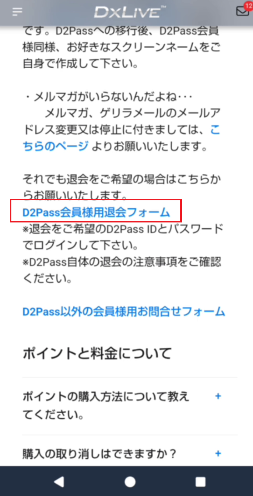
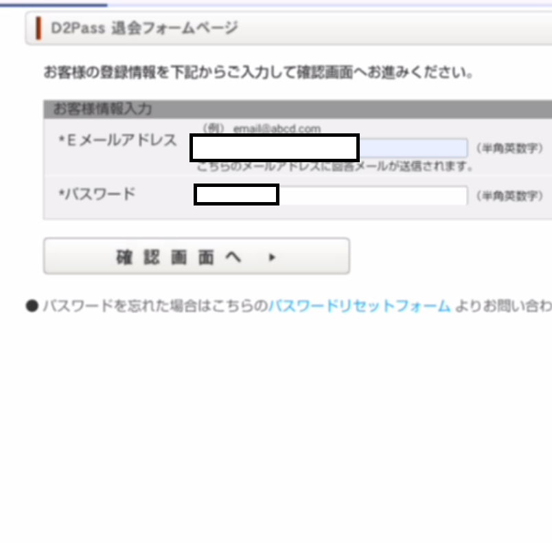

💡 確実に退会するための重要ポイント
「設定画面を探しても退会ボタンがない」という声をよく聞きます。DXLIVEでは、「よくある質問」から退会専用ページへアクセスするのが最も確実なルートです。
「設定画面を探しても退会ボタンがない」という声をよく聞きます。DXLIVEでは、「よくある質問」から退会専用ページへアクセスするのが最も確実なルートです。
【動画実証済み】DXLIVE 退会方法への正しいアクセス手順
動画内で実際に操作され、無事に退会が完了した「正解の手順」を詳しく解説します。
※マイページのトップ画面からスタートした際の手順です。
ステップ1：メニューから「よくある質問」を開く
マイページの画面左側にあるメニューリストの中から、中央付近にある「よくある質問」（クエスチョンマークのアイコン）をクリックします。

ステップ2：よくある質問のカテゴリーを開く
「よくある質問」ページに遷移します。画面を下にスクロールし、表示されているカテゴリーリストの中から「会員登録・退会について」のプラスマーク（＋）をクリックして、詳細項目を展開します。

ステップ3：退会に関する質問を選択する
展開された項目の中から、「退会したいのですが、どうすればよいですか？」という質問をクリックします。

ステップ4：回答内の退会リンクをクリックする
質問に対する回答文が表示されます。その文章内にある「退会ページ」という青いリンクをクリックします。ここが最大のポイントです。リンクは文章の末尾にひっそりと置かれています。

【補足】退会リンクをクリックした後の流れ
リンクをクリックすると外部の「D2PASS」連携画面などに遷移します。以下の手順で進めてください（画像は一部省略）。
- D2PASSのフォームへID・パスワードを入力してログインします。
- 規約の同意などにチェックを入れて退会フォームを開きます。
- アンケート画面が開きますが、任意のため「スキップ」して進めます。
- 再度ID・パスワードの入力を求められるので、入力して最終確認画面へ進みます。
ステップ5：退会確認画面で手続きを完了する
最終的な「退会確認」画面へ遷移します。保有ポイントの消滅などの注意書きを必ず一読してください。
画面下部にある「退会」ボタン（青色）をクリックして、手続きを確定させればすべて完了です。

| 残りポイント | 退会と同時にすべて失効します。返金は一切不可ですので、必ず使い切ってから進めましょう。 |
| お気に入り | フォローしていたライバーや履歴もすべて削除されます。再登録時も復元はできません。 |
| 個人情報の削除 | 退会後、一定期間を経てアカウントデータは完全に消去されます。 |
| 再登録 | 同じメールアドレスでの再登録はできません。退会前に慎重に判断しましょう。 |
⚠️ 退会前の最終確認
一度退会すると、同じメールアドレスを使って再登録することはできません。「しばらく利用しない」という場合でも、アカウントを保持しておくだけであれば料金はかかりませんので、慎重に検討することをおすすめします。
一度退会すると、同じメールアドレスを使って再登録することはできません。「しばらく利用しない」という場合でも、アカウントを保持しておくだけであれば料金はかかりませんので、慎重に検討することをおすすめします。
まとめ
DXLIVEの退会はオンラインで約2分・5ステップで完了します。以前の汎用的な手順よりも、今回実証した「よくある質問」を経由するルートが最も確実です。
追加課金も一切なく、手順自体は非常にシンプルですが、「同じメールアドレスでの再登録が不可」という点は最大の注意点です。「辞められない」という心配はありませんが、手続きは慎重に行ってください。